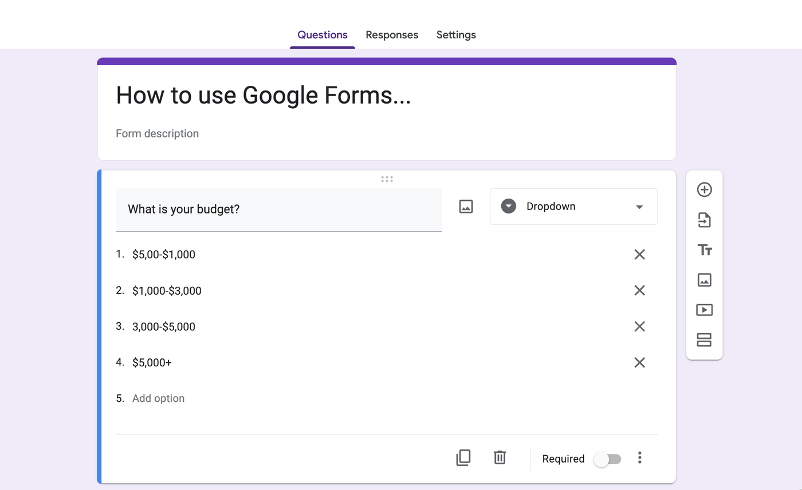
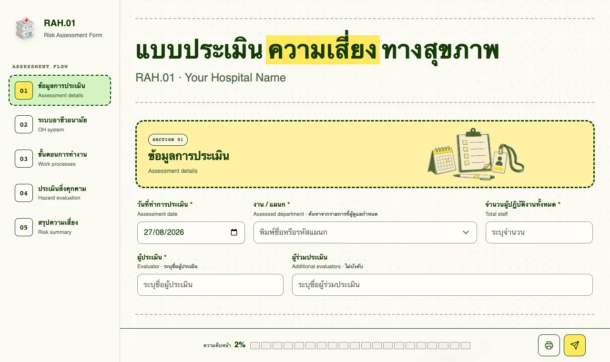
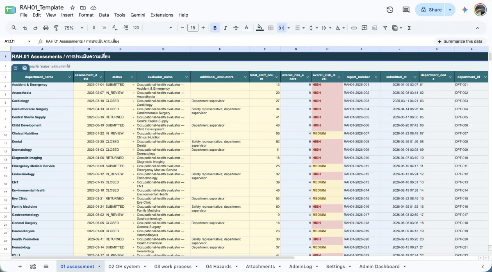
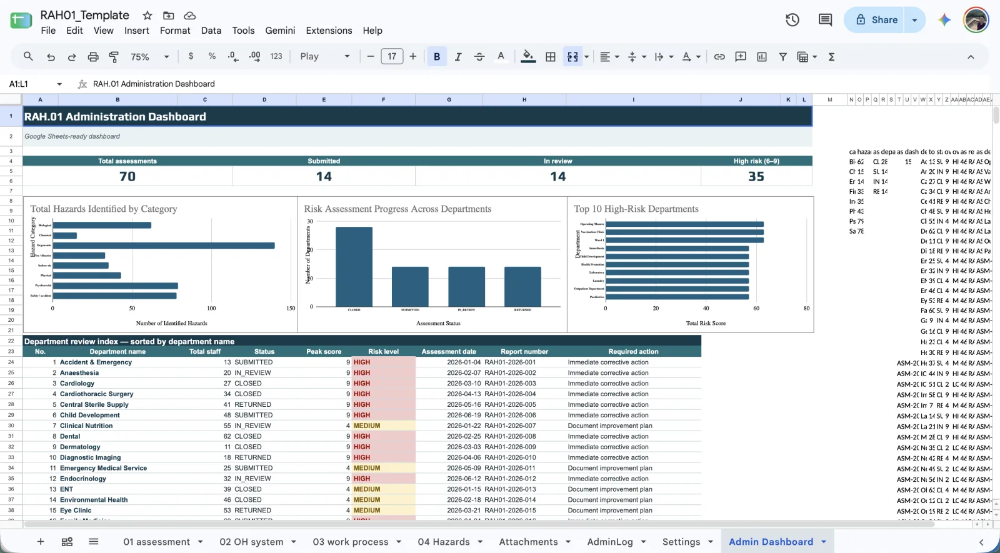
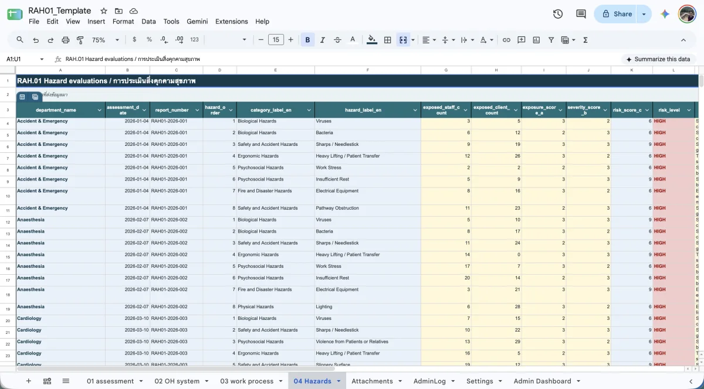

Free
OpenRAH.01 พร้อมใช้งาน
ดูโค้ดบน GitHub
รู้ความเสี่ยง
รู้ความเสี่ยง
ดูแลคนทำงานให้ตรงจุด
แบบประเมินความเสี่ยงสุขภาพสำหรับโรงพยาบาล
ทำงานด้วย Google Sheets และ Apps Script ของคุณเอง
แบบประเมินจริง ข้อมูลทดลองอยู่เฉพาะในเบราว์เซอร์นี้
ออกแบบให้เข้ากับงานที่โรงพยาบาลทำอยู่แล้ว
Google Sheets
Google Drive
Apps Script

ทำงานอย่างไร
หน้าเว็บ RAH.01 สำเร็จรูป
เพียงอัปโหลดลง Apps Script
ติดตั้งง่าย พร้อมคู่มือการใช้
ทีมอาชีวอนามัยสามารถเก็บข้อมูลความเสี่ยงออนไลน์และเป็นระบบ
01 แบบประเมิน RAH.01 บนเว็บ

ส่งข้อมูล
02 ข้อมูลใน Google Sheets

ข้อมูลอยู่ในที่ที่ทีมคุ้นเคย
Google Sheets พร้อมใช้งาน
เพียงอัปโหลด Google Sheets และ Apps Script
ไปยังบัญชี Gmail ส่วนตัวของคุณ
แดชบอร์ดสำเร็จรูป

01 แบบประเมิน
04 สิ่งคุกคาม

OpenRAH.01 สำเร็จรูปพร้อมใช้งานเพียงอัปโหลดไปยังบัญชีส่วนตัว
ติดดาว OpenRAH.01
ถ้า OpenRAH.01 มีประโยชน์
ช่วยกดดาวเป็นกำลังใจให้หน่อย